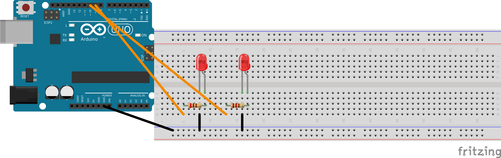

הכרטיסייה הזאת מראה איך לחבר את הלדים, הנגדים והכפתור בפרויקט 1. שומרים אותה ליד הברדבורד. אם מתבלבלים בחיווט, קודם מסתכלים על הכרטיסייה הזאת לפני שקוראים למורה.
⚠️הכללים החשובים ביותר
הרגל הארוכה של הלד = חיובי (+). היא הולכת לנגד, ומשם לרגל של הארדואינו.
הרגל הקצרה של הלד = שלילי (−). היא הולכת ל-GND של הארדואינו.
לכל לד צריך נגד של 220 אוהם משלו (פסי צבע: אדום · אדום · חום). בלי נגד = לד שרוף.
לכפתור צריך נגד הורדה של 10 קילו-אוהם (פסי צבע: חום · שחור · כתום). בלעדיו הכפתור קורא ערכים אקראיים.
🔌חיווט 1 — לד אחד על רגל 9 (🏁אבן דרך 3)
Arduino pin 9 ───[220 Ω]───┬─── LED long leg
│
▼
LED short leg ─── Arduino GND
רגל 9 ← נגד 220 אוהם ← רגל ארוכה של הלד. רגל קצרה ← GND. נבנה בפריצינג עבור הפרויקט.
🔌חיווט 2 — שני לדים על רגליים 9 ו-10 (🏁אבן דרך 5)
אותו חיווט כמו בחיווט 1, אבל מוסיפים לד שני בצבע אחר בשורה סמוכה בברדבורד, עם נגד 220 אוהם משלו שהולך לרגל 10.
Arduino pin 9 ───[220 Ω]───┬─── LED 1 long leg
▼
LED 1 short leg ─── Arduino GND
Arduino pin 10 ───[220 Ω]───┬─── LED 2 long leg
▼
LED 2 short leg ─── Arduino GND

רגל 9 ← 220 אוהם ← לד 1 · רגל 10 ← 220 אוהם ← לד 2. שתי הרגליים הקצרות ← GND. אותה תבנית כמו חיווט 1, מספרי רגליים שונים.
🔌חיווט 3 — הוספת הכפתור (🏁אבן דרך 7)
הכפתור נעוץ מעל המרווח המרכזי של הברדבורד, כך שארבע הרגליים שלו נוחתות בארבע שורות שונות.
Arduino 5 V ──────────────┬─── Button pin A
│
▼
Button pin B ────┬─── Arduino pin 2
│
└─[10 kΩ]── Arduino GND
⚠️חשוב: נגד ההורדה של 10 קילו-אוהם הולך בין רגל 2 לבין GND, לא בין 5 V לבין GND. אם מחווטים אותו בין 5 V לבין GND, לחיצה על הכפתור יוצרת קצר והארדואינו יתאפס.
רגל A של הכפתור ← 5 V · רגל B של הכפתור ← רגל 2 ודרך נגד הורדה 10 קילו-אוהם ← GND. זה חיווט pull-down: הנגד יושב בין רגל 2 ל-GND, לא בין 5 V ל-GND.
🔌חיווט 4 — שלושה לדים לתבנית רדיפה (גרסה 2 בלבד)
נחוץ רק אם בחרתם בתבנית הרדיפה בגרסה 2. מוסיפים לד שלישי על רגל 11 עם נגד 220 אוהם משלו, מחווט באותה צורה כמו לדים 1 ו-2.
Arduino pin 11 ───[220 Ω]───┬─── LED 3 long leg
▼
LED 3 short leg ─── Arduino GND
רגל 9 ← 220 אוהם ← לד 1 · רגל 10 ← 220 אוהם ← לד 2 · רגל 11 ← 220 אוהם ← לד 3. אותה תבנית, שלוש רגליים. בלי כפתור.
🔌חיווט 5 — שלושה לדים + כפתור (גרסה 2 🏁אבן דרך 4 — אפשרות ב')
נחוץ רק למי שבחרו בתבנית הרדיפה בגרסה 2 ומוסיפים את הכפתור באבן דרך 4. משלב את חיווט 4 (שלושה לדים על רגליים 9, 10, 11) עם חיווט 3 (כפתור על רגל 2 עם נגד הורדה 10 קילו-אוהם).
Arduino pin 9 ───[220 Ω]───┬─── LED 1 long leg
▼
LED 1 short leg ─── Arduino GND
Arduino pin 10 ───[220 Ω]───┬─── LED 2 long leg
▼
LED 2 short leg ─── Arduino GND
Arduino pin 11 ───[220 Ω]───┬─── LED 3 long leg
▼
LED 3 short leg ─── Arduino GND
Arduino 5 V ──────────────┬─── Button pin A
▼
Button pin B ────┬─── Arduino pin 2
└─[10 kΩ]── Arduino GND
⚠️אותו כלל של נגד הורדה: נגד 10 קילו-אוהם הולך בין רגל 2 ל-GND, לא בין 5 V ל-GND.
רגליים 9 / 10 / 11 ← 220 אוהם ← לדים 1 / 2 / 3 ← GND · כפתור ← רגל 2 עם נגד הורדה 10 קילו-אוהם ← GND. החיווט המלא של גרסה 2 אפשרות ב' + אבן דרך 4.